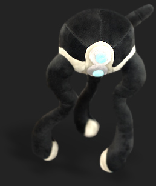
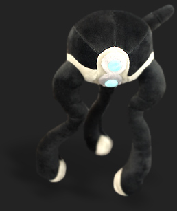

Friday, February 15, 2008
Here at Valve, the halls are alive with the sound of music thanks to the addictive new Steam game, Audiosurf. Audiosurf includes The Orange Box soundtrack (and some unreleased tracks as well). Plus, Audiosurf tracks your achievements on your Steam Community profile.


We released a free update for Team Fortress 2 on Thursday, headlined by a brand new map. "Badlands" is a control-point map that pushes gameplay onto vertical landscapes. This is the biggest TF2 update yet; check out the full list of gameplay enhancements and tweaks.
Professional guitar transcriber Ryan Maziarz of Phoenix, Arizona took the time to create a note-perfect transcription for “Still Alive.” We’re happy to share it with all of you musician-types on Steam. Enjoy! (.pdf format)
More Valve Critters. Now available at The Valve Store: a Hunter of your very own.
We released a free update for Team Fortress 2 on Thursday, headlined by a brand new map. "Badlands" is a control-point map that pushes gameplay onto vertical landscapes. This is the biggest TF2 update yet; check out the full list of gameplay enhancements and tweaks.
Professional guitar transcriber Ryan Maziarz of Phoenix, Arizona took the time to create a note-perfect transcription for “Still Alive.” We’re happy to share it with all of you musician-types on Steam. Enjoy! (.pdf format)
More Valve Critters. Now available at The Valve Store: a Hunter of your very own.
© Valve Corporation. All rights reserved. Valve, Half-Life, Counter-Strike, Team Fortress and Source are trademarks and/or registered trademarks of Valve Corporation.